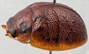
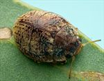
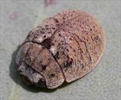
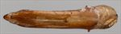
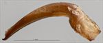
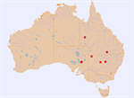

Click on images to enlarge
{kind=link}

Male, Wilpena, Flinders Ranges, South Australia
{kind=link}

Female, Tiboorurra, N.W. New South Wales
{kind=link}

Male, Oraparinna, Flinders Ranges, South Australia
{kind=link}

Aedeagus, dorsal view (Oraparinna, South Australia)
{kind=link}

Aedeagus, lateral view (Oraparinna, South Australia)
{kind=link}

Distribution
Name
Trachymela sp. Ta96
Reference specimen
2001-156, Wilpena, South Australia.
Adult Description
Length: ♂ 5.4–6.4 mm (n=8), ♀ 5.8–6.6 mm (n=10).
Colouration:
- Head: light- to mid-brown, with a pair of relatively large black patches behind fronto-clypeal suture, one on each side between eye and central suture, placed obliquely so that they almost touch anteriorly but are quite widely separated posteriorly, dark-brown or black-tipped mandibles; antennomeres uniformly straw-brown.
- Pronotum: brown, concolorous with head, with two quadrate black maculae almost invariably present, situated one on each side between eyes and humeral callus, sometimes these maculae are not black but of a darker brown than rest of surface and may be reduced in size to around the foveal peak, rarely are they completely absent (Qld specimen only).
- Scutellum: brown, concolorous with pronotum.
- Elytra: brown, concolorous with pronotum, with prominent disconnected black or dark-brown maculae usually present along anterior margin, along all or part of discal margin and, less often, around elytral summit, the black shade in these areas is confined to raised features such as verrucae or, less often, may be completely absent; wart-like elevations and ridges elsewhere on the elytra are concolorous with the surrounds, rarely slightly darker; punctures are similar to or a slightly darker shade than interstices, humeral callus usually darker than surrounding area, often black.
- Venter & Legs: light- to mid-brown with metaventrite rarely having some areas of darker shade, legs similar or slightly paler, inside surface of elytral epipleura brown.
- Cuticular Wax: mostly of a uniform light to medium brown, with a small lighter-coloured patch at anterior edge of each elytron adjacent to scutellum, head and lateral margins of pronotum also tend to be lighter in colour; elevated areas such as verrucae and ridges almost wax-free.
Morphology:
- Head: punctures moderate to large (pd ≈ 2–3×ef) and slightly unevenly and densely distributed. Antennae short, particularly in females (AL/BL: ♂ 38–43%, ♀ 29–32%), filiform.
- Pronotum: almost evenly curved transversely, foveal depression absent with epidermis slightly elevated into a smoothly rounded and sparsely punctured small pustule behind eyes, discal area with surface quite uneven, sometimes with longitudinal wrinkles present, puncturation clearly to more vaguely impressed, evenly to unevenly distributed and relatively dense (spacing ≈ 2–3pd), becoming much more coarse at lateral margins. Front margins join lateral margins in a smoothly rounded right-angle, with lateral margin initially briefly straight before curving smoothly and gradually towards rear margin, broadest just in front of posterolateral angle.
- Scutellum: densely punctured, with punctures similar or better defined than on pronotum, evenly or slightly unevenly distributed.
- Elytra: in lateral view, surface roughly evenly curved from just behind scutellum to about 1/3 of distance to apex, where the curvature increases noticeably, punctures distinct and relatively large, closely spaced and quite evenly distributed over anterior two-thirds of surface, more closely spaced and regular in posterior third, with a sparse scatter of much smaller punctures on the interstices, a thin, sometimes partially interrupted elevated ridge runs transversely from elytral summit to middle of edge of disc with elytral surface vaguely depressed just anterior to it, some small elevated and quite inconspicuous verrucae are scattered about the surface primarily posterior to the central ridge, sometimes vaguely aligned transversely or even longitudinally, surface continuous under humeral callus. Vertical extension of epipleura considerable (HCE/PW = 0.37–0.40).
- Venter: prosternal process almost parallel, closed anteriorly, a sparse scatter of setae present along prosternal process and on mesoventrite, a single long seta present on median and posterior trochanters, usually two, less often 1 or 3 on anterior trochanters; front edge of metaventrite beveled, slightly rounded; inner edge of posterior of epipleurae lacking setae.
Male Genitalia (Aedeagus):
- Dimensions: long and thin (LPE/BL = 35–40%), needle-like.
- Dorsal view: shaft broadest near basal sulcus, then approximately parallel-sided, from there to about middle of ostium from where sides converge smoothly and in roughly straight lines to apex, tip triangular and quite broad, dorso-median channel relatively broad but very shallow and short, dorso-median channels well-defined and quite long, ostium large, roughly oval.
- Lateral view: curvature of shaft quite pronounced around basal sulcus, then becoming much less so towards apex, increasing again slightly just before apex, tip deflexed.
Immature Stages
Unknown.
Similar species
- Ta10 and similar: See Ta10 for a discussion of the several species that have a transverse median elytral ridge and similar pattern of dark colouration as Ta96.
- Ta231: This species seems particularly close to Ta96. Specimens differ from Ta96 in (1) the aedeagus being about 10% shorter, (2) the antennae longer, and (3) HCE/BL slightly larger. The aedeagus of these three specimens is blunter at the apex than in typical Ta96 and their ostium is not as extended posteriorly as in Ta96. The broadest part of the aedeagus is at about 20% of its length from the apex in Ta96, but only about 10% in these specimens.
Notes
- Distribution & Abundance: Ta96 likely has a broad distribution in central Australia, with specimens from the widely separated locations in South Australia, New South Wales, and Queensland differing little. A single female from near Cobar in N.S.W. has verrucae in the posterior half of the elytra that are darker than is typical for the other locations but is otherwise very similar.
- Host Associations: The hosts recorded for this species are almost exclusively in the box-group of Eucalyptus (Symphyomyrtus : Adnataria), particularly Eucalyptus coolabah and Eucalyptus intertexta.
Copyright © 2026. All rights reserved.